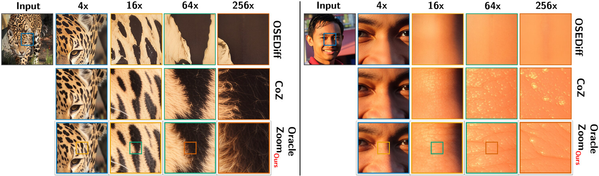
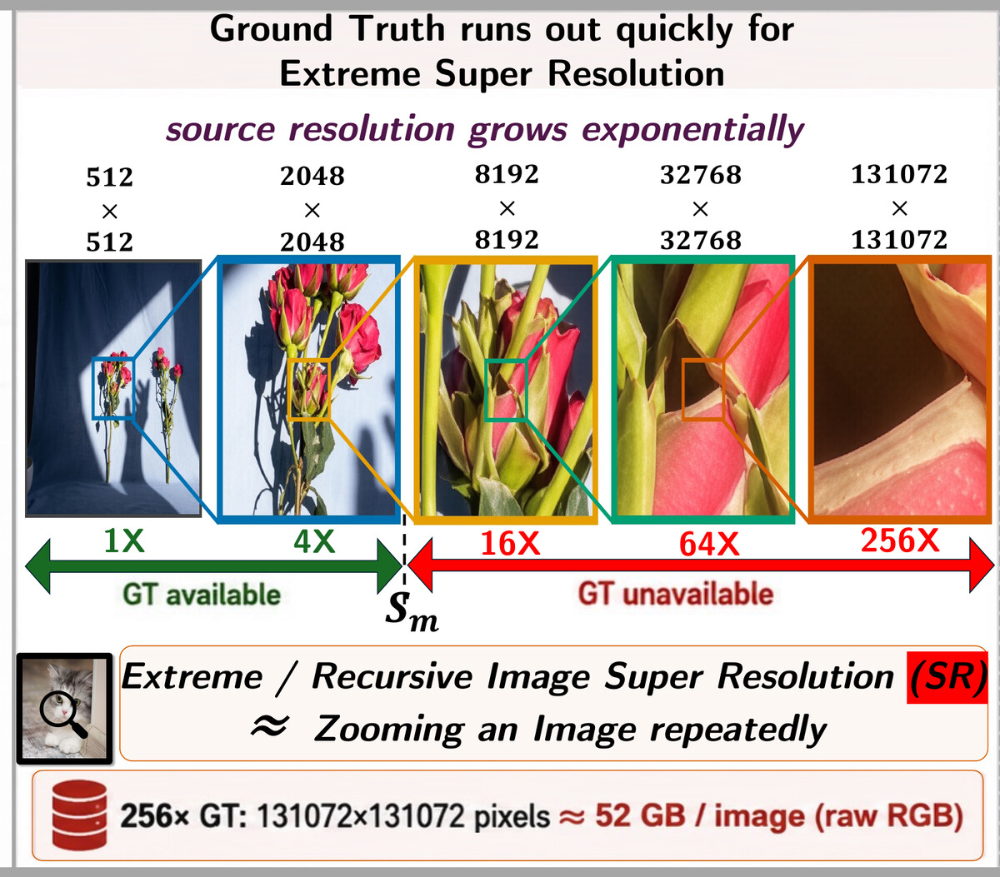
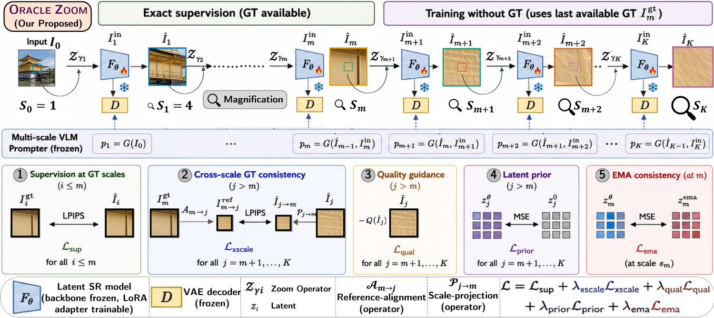
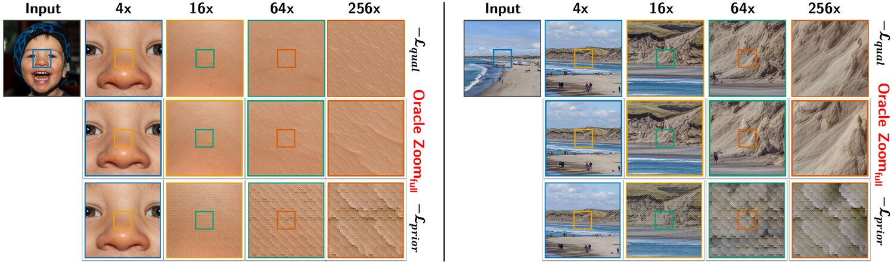
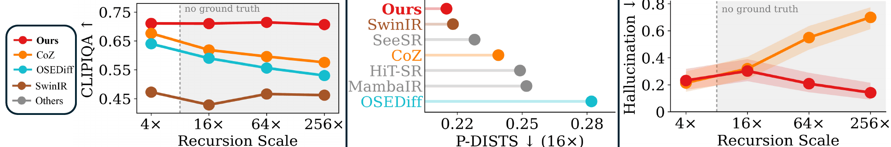
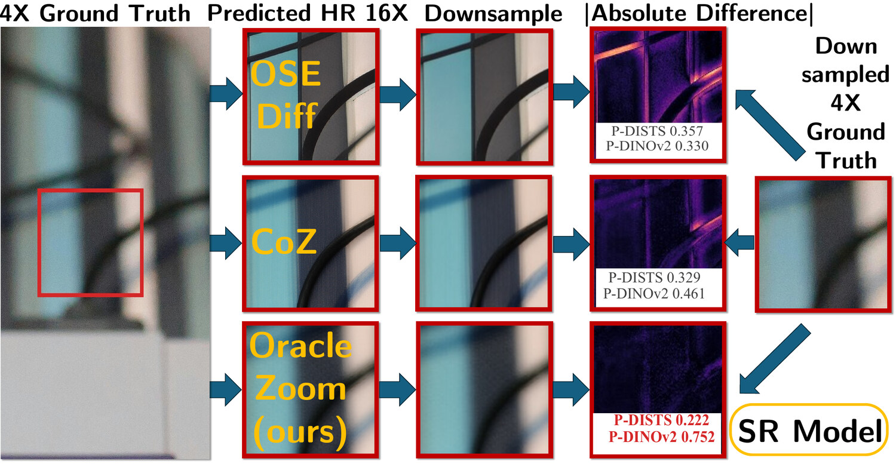
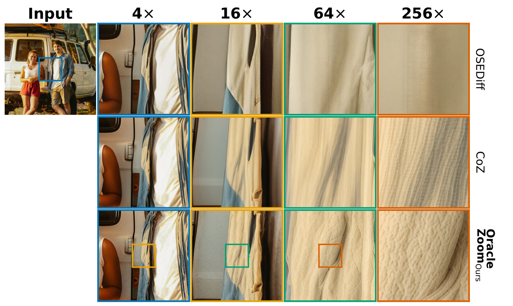
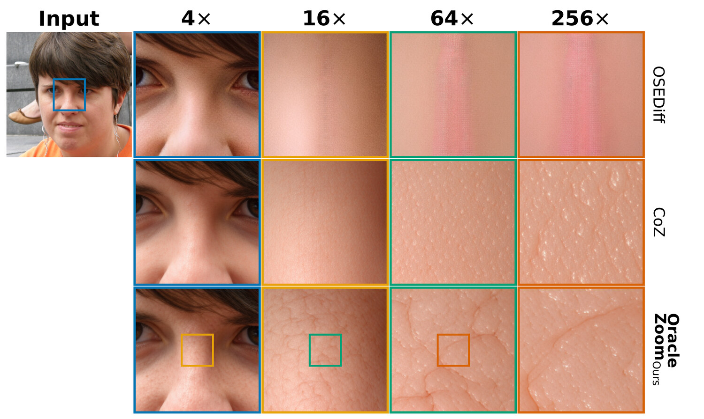
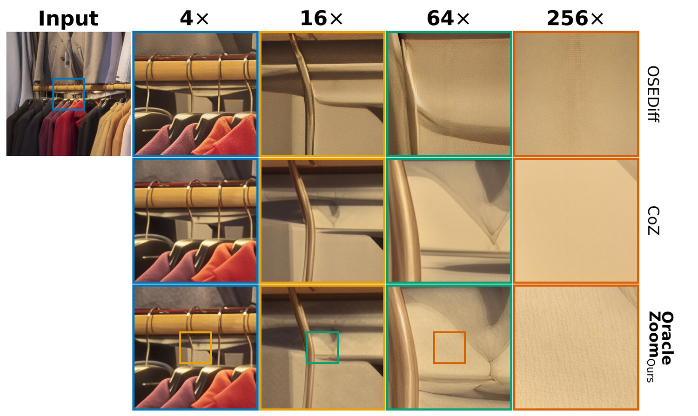
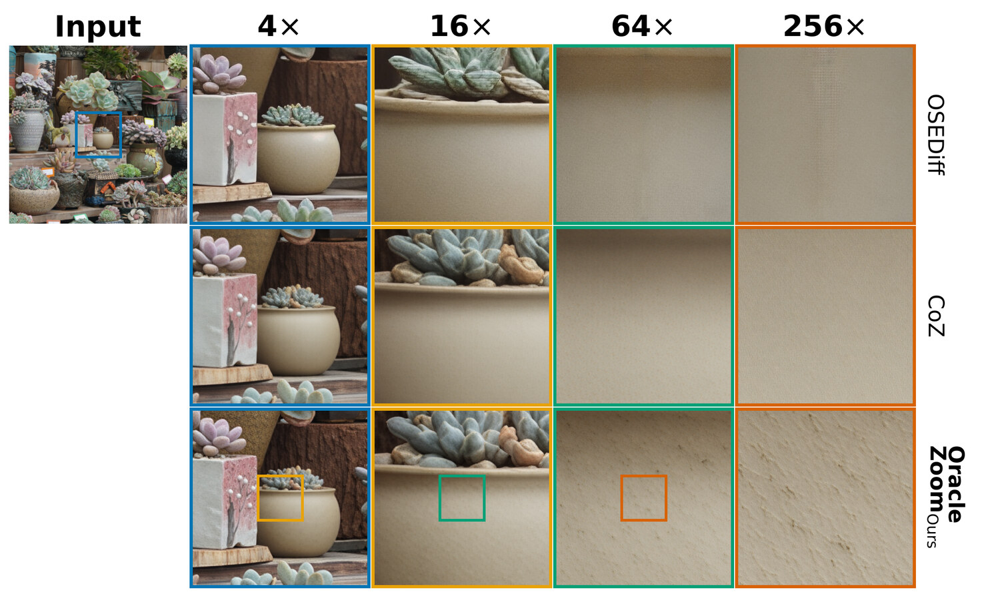

OracleZoom
On-Policy Self-Distillation Inspired Reference-Constrained Recursive Image Super-Resolution
OracleZoom uses the last available ground-truth reference to train deeper zooms. Each step takes the model's previous prediction as input. Training constrains the structure that the reference can still verify and guides the finer detail that must be synthesized.

Abstract
Recursive super-resolution reaches extreme magnification by feeding each prediction into the next zoom step. The source resolution needed for ground-truth targets grows rapidly, making supervision at every depth impractical. In our setting, direct targets stop at 4×, while evaluation continues through 16×, 64×, and 256×.
OracleZoom trains on its own recursive predictions and carries the last available ground truth beyond that boundary. Direct supervision anchors the 4× output. Cross-scale alignment checks deeper predictions against the part of that reference still visible after projection. A frozen quality model guides unresolved detail, a KL-constrained pretrained prior limits drift, and an exponential moving average (EMA) adapter stabilizes training.
Across seven datasets, OracleZoom achieves 0.713 mean CLIPIQA and the best aggregate 4× LPIPS (0.199) and DISTS (0.160) among the compared methods. An independent VLM judge prefers it over Chain-of-Zoom in 68% of decided comparisons at 64× and 78% at 256×. A rank-16 LoRA adapter adds 7.1M trainable parameters and is trained on 1,000 images. Deeper-scale evaluation measures agreement with observable evidence; it cannot verify unseen fine detail.
The zoom continues after direct supervision ends
A recursive super-resolution model enlarges a region, crops into its prediction, and repeats. Any mistake can become part of the next step's input. To supervise every step from a 512×512 input through 256×, the source would need to reach 131072×131072 pixels: about 52 GB for one uncompressed RGB image.
Such targets are impractical at scale. Our setup provides ground truth at 4×, but no matching targets for deeper zooms. Captions can guide what the model draws. They cannot verify the textures or boundaries it adds.

A deeper zoom covers a smaller region of the last target. Reducing the prediction to the target's resolution lets us check its shapes and boundaries against that region, even though finer detail remains unverified.
Use the last reference to check the next zoom
A 16× prediction has no matching target, but the region it enlarges is still visible in the 4× reference. OracleZoom projects that prediction back to the reference resolution and compares the aligned regions. This checks the structure that remains observable, even when finer detail cannot be verified.

1. Anchor the first prediction weight 1.0
At 4×, LPIPS compares the decoded prediction with the ground-truth image. This teaches the adapter to preserve observed content at the scale where a direct target exists.
2. Carry the reference forward weight 1.0
Project the deeper prediction back to the last reference resolution. Match it to the corresponding ground-truth region with LPIPS. This constrains observable structure beyond the last directly supervised scale.
3. Guide the unresolved detail weight 0.4
Many detailed images can shrink to the same lower-resolution view. A frozen quality model, TOPIQ-NR, encourages plausible detail within that ambiguity. TOPIQ-NR supplies the training reward and is excluded from the primary evaluation.
4. Limit drift from the pretrained model weight 8.0
A KL prior keeps the adapted latent prediction close to the frozen SR model's prediction on the same input. It restrains quality optimization from introducing unsupported patterns.
5. Stabilize training at the boundary weight 0.1
An exponential moving average (EMA) copy of the adapter supplies a steadier latent target using the ground-truth input at the supervision boundary. This branch is used only during training.
A small adapter shared across scales
We train a rank-16 LoRA adapter on the SD3 transformer: 7.1M parameters, 1,000 images. The SR backbone, VAE decoder, and VLM prompter stay frozen. At inference, the adapter runs in the existing recursion without ground truth, the quality model, or the EMA branch.
Why quality guidance needs a prior
Removing the KL prior raises 16× CLIPIQA from 0.714 to 0.794. But projected-reference error (P-DISTS) worsens from 0.215 to 0.330, and the judged hallucination rate rises from 0.303 to 0.907. The higher quality score comes with more errors against the available evidence.

The benefit grows at deeper zooms
We compare seven methods on seven datasets with matched inputs, zoom paths, crop geometry, and metrics. OracleZoom and Chain-of-Zoom use the same VLM prompter. The other baselines use their native SR pipelines without that shared prompter. We measure perceptual quality and agreement with the available reference, then use a VLM judge to check for contradictions with earlier zooms.
| Method | No-reference quality, higher is better | Fidelity at 4×, where ground truth exists, lower is better | ||
|---|---|---|---|---|
| CLIPIQA, mean | CLIPIQA at 256× | LPIPS | DISTS | |
| HiT-SR | 0.414 | 0.488 | 0.341 | 0.222 |
| MambaIR | 0.428 | 0.501 | 0.343 | 0.224 |
| SwinIR | 0.456 | 0.463 | 0.228 | 0.175 |
| SeeSR | 0.546 | 0.505 | 0.216 | 0.164 |
| OSEDiff | 0.581 | 0.532 | 0.336 | 0.228 |
| Chain-of-Zoom | 0.621 | 0.579 | 0.215 | 0.170 |
| OracleZoom ours | 0.713 | 0.706 | 0.199 | 0.160 |
OracleZoom leads the compared methods in mean CLIPIQA and aggregate 4× LPIPS and DISTS. CLIPIQA averages all four scales across seven test sets; fidelity averages the four datasets with 4× targets. At 256×, CLIPIQA is 0.706, compared with 0.579 for Chain-of-Zoom.

Check what the last reference can still tell us
At 16×, we can test whether generated structure still agrees with the 4× reference. After projection, OracleZoom achieves 0.215 P-DISTS (lower is better) and 0.691 DINOv2 similarity (higher is better), compared with 0.239 and 0.633 for Chain-of-Zoom. These scores measure preserved evidence at the reference resolution.

InternVL3.5-38B checks consistency with earlier zooms by comparing OracleZoom and Chain-of-Zoom on 120 region-aligned examples per scale. The judge comes from a different model family than the Qwen prompter. Win rates exclude ties and abstentions.
Show the raw counts
| Scale | OracleZoom | Chain-of-Zoom | Tie | Abstained | Win rate [95% CI] |
|---|---|---|---|---|---|
| 4× | 29 | 29 | 54 | 8 | 0.50 [0.38, 0.63] |
| 16× | 60 | 53 | 6 | 1 | 0.53 [0.44, 0.62] |
| 64× | 77 | 37 | 6 | 0 | 0.68 [0.59, 0.75] |
| 256× | 91 | 25 | 4 | 0 | 0.78 [0.70, 0.85] |
The judge also flags predictions that contradict observable anchors. At 64× and 256×, OracleZoom's hallucination rates are 0.21 and 0.14, compared with 0.55 and 0.70 for Chain-of-Zoom. These rates measure contradictions with earlier zooms; exact recovery remains unverified.
Follow the detail across different scenes
These examples follow the same 4× to 256× trajectory on four of the seven test sets. Compare how material texture and local boundaries evolve as each output becomes the next input. Open any figure to inspect the details.




Contributions
OracleZoom shows how the last available ground truth can guide recursive super-resolution beyond direct supervision.
- 1. Formulate the supervision gap in recursive zoom.
- We formulate recursive super-resolution when ground-truth targets become impractical at deeper scales. Each prediction becomes the next input, so training must account for errors carried across zoom steps.
- 2. Carry the last reference beyond that gap.
- OracleZoom trains on its own recursive predictions. Aligned cross-scale projection checks deeper outputs against the last available ground truth, preserving observable evidence without annotations at deeper scales.
- 3. Separate verifiable structure from unresolved detail.
- Direct and cross-scale supervision constrain what the reference can verify. A quality objective guides the remaining detail, a KL-constrained pretrained prior limits drift, and EMA consistency stabilizes training.
- 4. Improve quality and fidelity while reducing hallucination.
- Across seven datasets, OracleZoom achieves 0.713 mean CLIPIQA and the best aggregate 4× LPIPS (0.199) and DISTS (0.160) among the compared methods. At 256×, an independent VLM judge prefers it over Chain-of-Zoom in 78% of decided comparisons and reports a lower hallucination rate (0.14 versus 0.70).
Code, model, and data
Model
The transformer with the trained LoRA adapter merged into its weights, plus the checkpoints needed for inference.
Merged model weightsThe preprint is not posted yet. The paper link on this page will point to it as soon as it is.
BibTeX
@misc{dipta2026oraclezoom,
title = {OracleZoom: On-Policy Self-Distillation Inspired Reference-Constrained
Recursive Image Super Resolution},
author = {Roy Dipta, Shubhashis and Saha, Sourajit and Saha, Shaswati and Sarwar, Nobin},
year = {2026},
url = {https://github.com/dipta007/OracleZoom},
note = {Preprint in preparation. Under submission to WACV 2027}
}